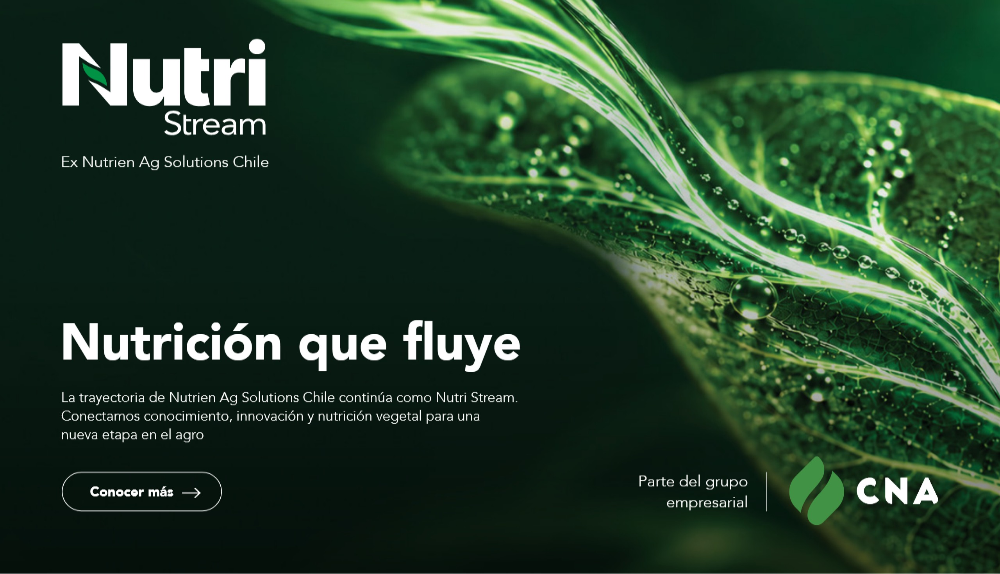
Nutrición que fluye
La trayectoria de Nutrien Ag Solutions Chile continúa como Nutri Stream. Conectamos conocimiento, innovación y nutrición vegetal para una nueva etapa en el agro.
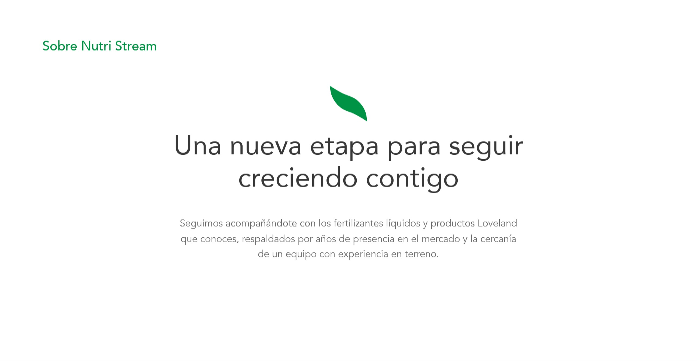
Sobre Nutri Stream
Una nueva etapa para seguir creciendo contigo
Seguimos acompañándote con los fertilizantes líquidos y productos Loveland que conoces, respaldados por años de presencia en el mercado y la cercanía de un equipo con experiencia en terreno.
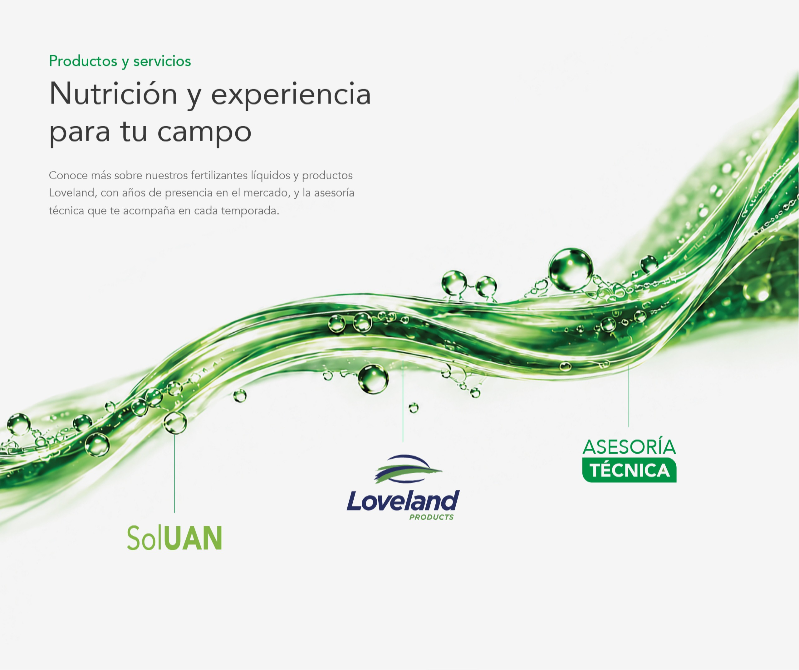
Productos y servicios
Nutrición y experiencia para tu campo
Conoce más sobre nuestros fertilizantes líquidos y productos Loveland, con años de presencia en el mercado, y la asesoría técnica que te acompaña en cada temporada.
- SolUAN
- Loveland Products
- Asesoría técnica
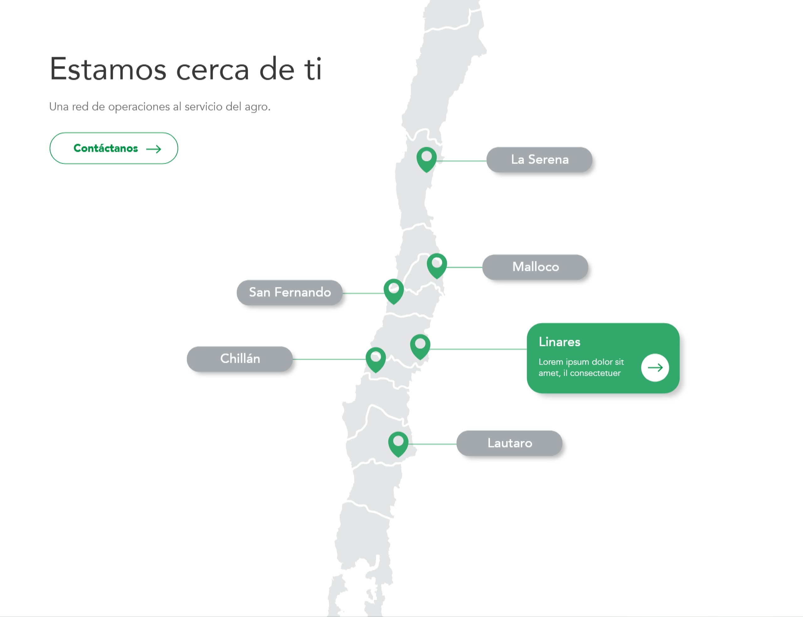
Estamos cerca de ti
Una red de operaciones al servicio del agro.
- La Serena
- Santiago
- Malloco
- San Fernando
- Chillán
- Linares
- Lautaro
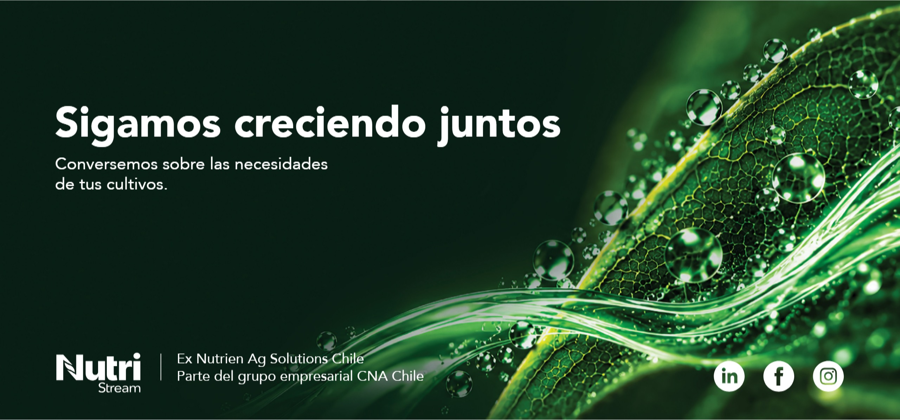
Sigamos creciendo juntos
Conversemos sobre las necesidades de tus cultivos.
Ex Nutrien Ag Solutions Chile. Parte del grupo empresarial CNA Chile.
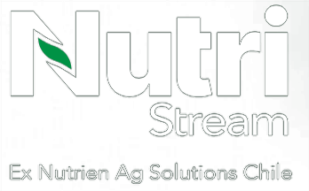
Nutrición que fluye
La trayectoria de Nutrien Ag Solutions Chile continúa como Nutri Stream. Conectamos conocimiento, innovación y nutrición vegetal para una nueva etapa en el agro.
Conocer más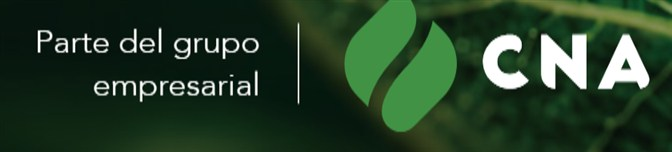
Sobre Nutri Stream
Una nueva etapa para seguir creciendo contigo
Seguimos acompañándote con los fertilizantes líquidos y productos Loveland que conoces, respaldados por años de presencia en el mercado y la cercanía de un equipo con experiencia en terreno.
Productos y servicios
Nutrición y experiencia para tu campo
Conoce más sobre nuestros fertilizantes líquidos y productos Loveland, con años de presencia en el mercado, y la asesoría técnica que te acompaña en cada temporada.
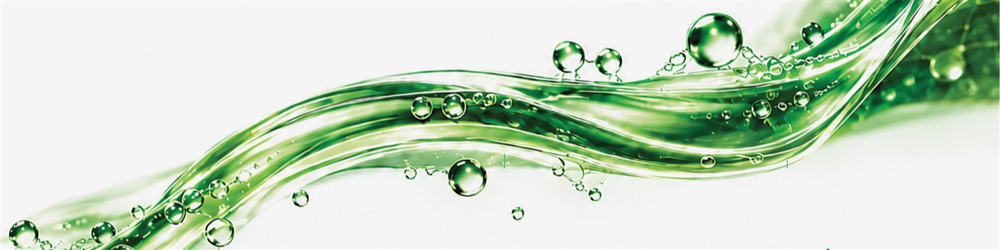
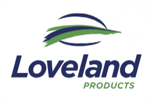
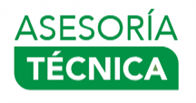
Estamos cerca de ti
Una red de operaciones al servicio del agro.
Contáctanos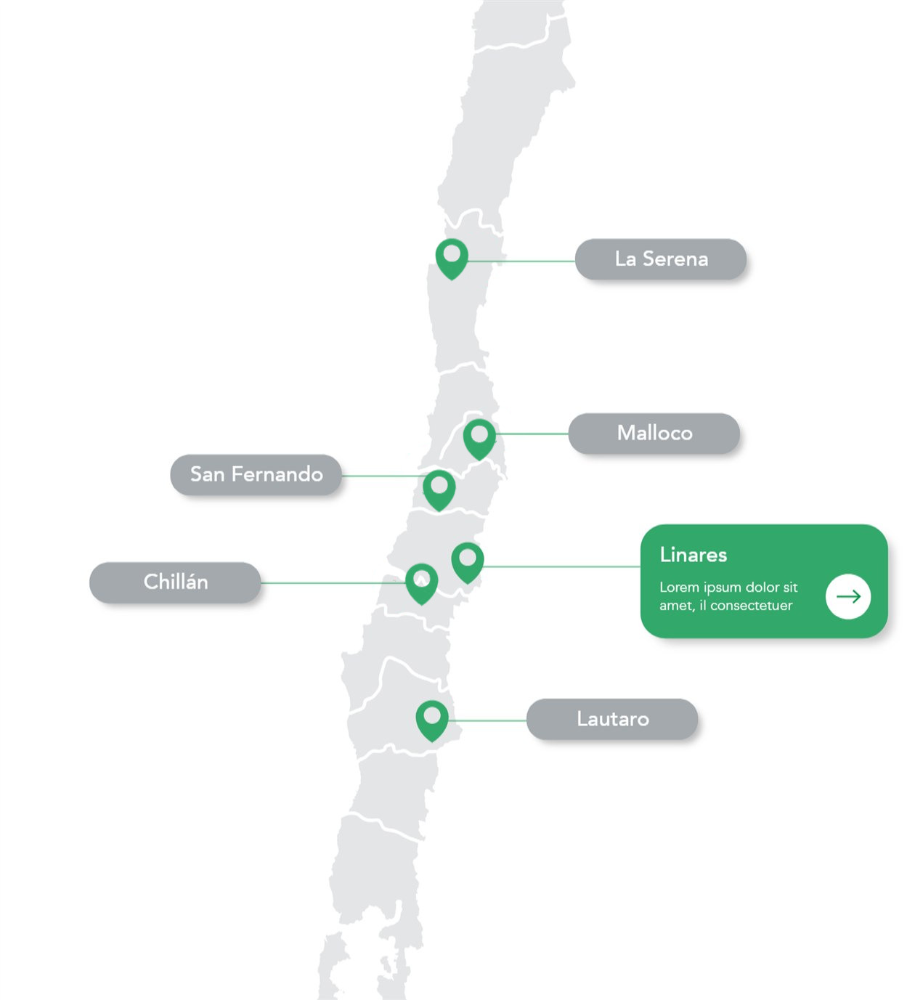
Sigamos creciendo juntos
Conversemos sobre las necesidades de tus cultivos.